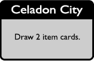
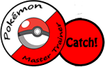

Cities and Towns allow multiple players to stand together. In most of them, you will have the chance to draw 2 item cards. In a select few, you can use a Pokémon Center to revive knocked out Pokémon. Either revive a single Pokémon (guaranteed) or try to roll higher than a 4 to revive all of them.
When you land on a "Catch!" space, you are in luck. It's time to catch a Pokémon! Click the chip next to the space you're on and the Pokémon will be revealed. For details on how to actually catch it, go to the Actions page.
When you land on an "Event" space, draw an event card from the pile. This card triggers a certain event and may affect other players as well.